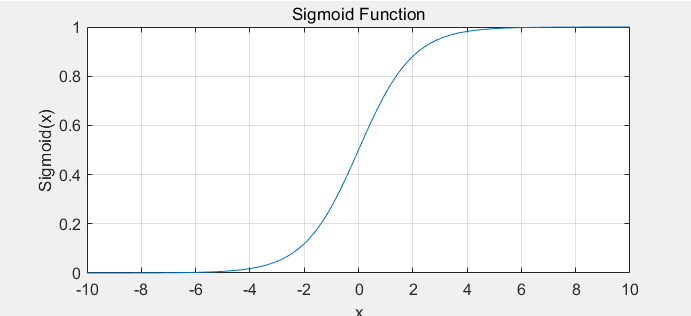
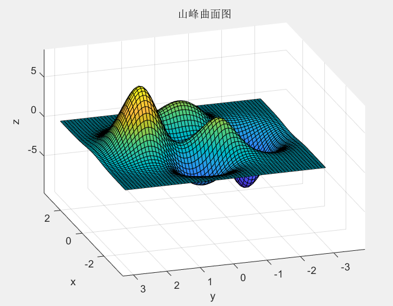

# 基于MPL架构的神经网络 ## 序言： 最近一个名为KAN的神经网络架突然爆火，所以借此机会了解了一下神经网络相关的概念。并分析KAN与传统架构有哪些不同。本文仅代表笔者的个人理解，不涉及严谨的数学证明，若有错误之处还请指正。 ## ## 正片： 神经网络好像是一个很高级的词汇，让我们听见就觉得其遥不可及。实际上它本质上就是一个**函数**。为什么这么说呢，就拿最基本的人脸识别来举例子吧。 人脸识别最基本的流程是什么呢，比如我们宿舍的门禁系统，由摄像头拍摄帧流，把数据流发送给上位机，在上位机中对拍摄到的某帧画面进行标记人脸检测人脸，最终输出结果，开门或是不开门。这个过程可以分为三个步骤： 1. **输入图片** 2. **处理图片** 3. **输出结果** 输入 -> 处理 -> 输出，**这本质是不是把一个集合里的元素映射到另一个集合**呢，这不就是我们初中就开始接触的函数吗？假设我们有一个函数f，f的参数（自变量）是我们输入的图片，直觉上可能会以为f的值就是一个布尔值（是否打开门），可以这么理解，但实际上f是一个浮点数(***confident***) 它代表**置信度**或者**置信距离**，这个数可以用来衡量你是某个人的概率大小。怎么样，原理是不是很简单？ 那么我们现在是否只要找到一个函数f，能够满足我们上述需要的映射关系，人脸识别这个项目就大功告成了？是这样的，所谓的训练模型，就是在寻找这样的一个函数，它描述了输入与输出之间的转换关系，而我们的神经网络就是函数f（当然这么说可能有些不严谨）。 <img title="" src="https://tse4-mm.cn.bing.net/th/id/OIP-C.B9k1miuH_RXGW1KE8k7fJwAAAA?w=187&h=180&c=7&r=0&o=5&dpr=1.3&pid=1.7" alt="神经网络 的图像结果" width="260"> 让我们来看一个非常经典的神经网络吧，我们可以看到它共有三层，即 输入层，隐藏层，输出层。我们可以看到，它实际上就是一张有向**有向加权图**，圆圈代表节点，箭头代表边，它的每条边都有自己的权重。我们可以看到各个节点之间是**全连接**的，假设每一层从上到下每个节点的索引是1,2,3,...,n，记第i层第j个节点为$\boldsymbol{layer_{i,j}}$，记$\boldsymbol{layer_{i,j}}$和$\boldsymbol{layer_{i-1,k}}$间的边的权值为$\boldsymbol{w_{j,k}}$，，那么第i层中的某个节点的值就等于上一层的节点加权求和，即： $$ layer_{i,j} = \sum\limits_{k=1}^{n} layer_{i-1,k} $$ 这是最简单的形式，实际上每个节点还需加上偏置$\boldsymbol{b_{i-1}}$，在加权求和之后，影藏层还会对得到的值进行一次非线性变换（即把得到的值带入激活函数），这里激活函数选择使用大名鼎鼎的**Sigmoid函数**。Sigmoid函数是一个在生物学中常见的S型函数，也称为S型生长曲线。在深度学习中，由于其单增以及反函数单增等性质，Sigmoid函数常被用作神经网络的激活函数，将变量映射到[0,1]之间。其表达式如下： $$ Sigmoid(x) = \frac{1}{1 + e^{-x}} $$  所以真正的$\boldsymbol{layer_{i,j}}$的值就很明了了： $$ layer_{i,j} = Sigmoid \circ (\sum\limits_{k=1}^{n} layer_{i-1,k} + b_{i-1}) $$ 但是实际的神经网络当然不止一个隐藏层，假设有k个隐藏层，那么加上输入层和输出层就一共有k+2层，这样我们上述的表述方法就不是很方便（其实我觉得挺方便的），那么我们可以引入线性代数中的矩阵乘法来表述上述函数，即： $$ MPL(x) = (\Phi_k \circ \Phi_{k-1} \circ \Phi_{k-2} \circ ... \circ \Phi_{1})x = \Phi_{Hidden} \circ x $$ 其中$\boldsymbol{\Phi_k}$表示第k个隐藏层的函数矩阵，$\boldsymbol{x}$为输入矩阵。与单层神经网络不同。 理论证明，两层神经网络可以无限逼近任意连续函数。这背后涉及到一个数学定理，即**通用近似定理**或**万能近似定理**（**Universal Approximation theorem**）。***接下来的证明直接跳过也没有关系，不影响对神经网络的理解*** > 一个前馈神经网络如果具有线性输出层和至少一层具有任何一种‘‘挤压’’ 性质的激活函数（例如logistic sigmoid激活函数）的隐藏层，只要给予网络足够数量的隐藏单元，它可以以任意的精度来近似任何**从一个有限维空间到另一个有限维空间**的Borel 可测函数。 > > 万能近似定理意味着无论我们试图学习什么函数，我们知道一个大的MLP 一定能够表示这个函数。然而，我们不能保证训练算法能够学得这个函数。即使MLP能够表示该函数，学习也可能因两个不同的原因而失败。 > > 1. 用于训练的优化算法可能找不到用于期望函数的参数值。 > 2. 训练算法可能由于过拟合而选择了错误的函数。 详细证明可以看一下这个回答： [Where can I find the proof of the universal approximation theorem?](https://ai.stackexchange.com/questions/13317/where-can-i-find-the-proof-of-the-universal-approximation-theorem) 激活函数就拿Sigmoid函数举例吧，神经网络是最简单的只有一个隐藏层的结构（第一张图）。接下来我们来不太严谨的证明一下这个定理： 我们的本质是加权求和之后的值作为自变量传入Sigmoid函数，加权求和后得到的函数实际上是一个线性函数（一次函数），将一次函数传入Sigmoid函数后，它会被扭曲成一个非线性的函数，假设传入的一次函数为$kx+b$，新函数则是$Sigmoid(kx+b)$，简单分析一下，$b$在$k$固定时只影响对称中心的水平坐标，而$k$则会影响函数在对称中心附近的增长率（即斜率），当$k$足够大时，函数会在对称中心处产生一个类似矩形波一样的“分段函数”。而我们的将其传递到下一层时还会再乘以一个新的权重，而我们只要给适当大小的权重，当前层无限的节点加权求和后一定可以拟合任意一条函数。  这是上述图中的mathlab代码，可以跑一下感受一下。 ```cpp clc; clear; hLine = animatedline('Color', 'b', 'LineWidth', 2); xlabel('x'); ylabel('y'); title('Sigmoid(x) = 1 / (1 + exp(-kx-b))'); grid on; xlim([-10, 10]); ylim([0, 1]); animationDuration = 10; kRange = 0:100; numSteps = numel(kRange); timeInterval = animationDuration / numSteps; for k = kRange clc; fprintf('当前的 k 值：%d\n', k); x = linspace(-10, 10, 100); y = 1 ./ (1 + exp(-k*x)); clearpoints(hLine); addpoints(hLine, x, y); drawnow; pause(timeInterval); end ``` #### 至此，我们便了解了神经网络的基本原理，接下来我们来更细致的学习一下其中一些操作的过程和内涵： - **模型训练**：上述提到神经网络的本质就是一个蕴含多个参数的函数，我们训练模型的过程就是根据已知的输入和输出来反向求解我们的参数（权重和偏置）。机器学习模型训练的目的，就是使得参数尽可能的与真实的模型逼近。具体做法是这样的。首先给所有参数赋上随机值。我们使用这些随机生成的参数值，来预测训练数据中的样本。样本的预测目标为$y_p$，真实目标为$y$。那么，定义一个值$loss$表示误差函数，则有： $loss = (y_p - y)^2$，你或许会问为什么不是$loss = abs(y_p - y)$。刚开始我也有这样的疑问，实际上是因为效率问题，前者在实际计算中效率更高。又因为$y_p$就等于我们输出层的值，即$\boldsymbol{MPL(x)}$，所以有： $$ Loss(x) = (MPL(x) - y)^2 $$ 这个函数被称为**损失函数** **(loss function)**。我们在训练时，我们为了节省时间，是否希望误差函数尽可能变小的更快呢，即花费相对小时间使得误差函数最小。这里需要使用一种重要的算法，即**梯度下降算法**。看起来很高深，其实学过高等数学第二册的都知道梯度这一概念，梯度是一个向量，方向平行于切平面法向量（这里我在初学的时候纠结了很久，始终想不明白为什么是垂直而不是在切平面上，这篇文章做了很好的解释 [梯度含义的理解](https://blog.csdn.net/mengdeer_Q/article/details/129837449)），大小为在函数某点方向导数的最大值。当然这些是他的数学定义，实际上它在我们的生活中无处不在。比如下方的函数曲面是一个个山峰的低谷，我们要从山峰到低谷选择一条相对方便的路径，该怎么选呢，是不是只要在当前点时，朝着当前点方向导数最大的方向走就行了呢（这里本质是**贪心**的策略，而实际问题往往更复杂，所以是相对方便而不是最方便）。 假设这座山最陡峭的地方是无法通过肉眼立马观察出来的，而是需要一个复杂的工具来测量，同时，你此时正好拥有测量出最陡峭方向的工具。所以，你每走一段距离，都需要一段时间来测量所在位置最陡峭的方向，这是比较耗时的。那么为了在太阳下山之前到达山底，就要尽可能的减少测量方向的次数。这是一个两难的选择，如果测量的频繁，可以保证下山的方向是绝对正确的，但又非常耗时，如果测量的过少，又有偏离轨道的风险。所以需要找到一个合适的测量方向的频率（多久测量一次），来确保下山的方向不错误，同时又不至于耗时太多，在算法中我们称之为**步长**。按照梯度下降算法的思想，它将按如下操作达到最低点： **1.** 明确自己现在所处的位置 **2.** 找到相对于该位置而言下降最快的方向 **3.** 沿着第二步找到的方向走一小步，到达一个新的位置，此时的位置肯定比原来低 **4.** 回到第一步 **5.** 终止于最低点 按照以上5步，最终达到最低点，这就是梯度下降的完整流程。当然你可能会说，图中不是有不同的低谷吗，你怎么确定哪个最低呢？是的，因为上图并不是标准的凸函数，往往不能找到最小值，只能找到**局部极小值**。所以你可以用不同的**初始位置**进行梯度下降，来寻找更小的极小值点，以趋近**最值点**。  所以我们可以知道，梯度就是导数，梯度下降法就是一种通过求目标函数的导数来寻找目标函数最小化的方法。梯度下降目的是找到目标函数最小化时的取值所对应的自变量的值，**目的是为了找自变量$x$。** 算法上的解释： $$ \boldsymbol{x = x - \alpha \cdot \frac {\partial f}{\partial x}} $$ 其中$f$是关于向量$x$的函，把他们理解成普通的函数就行。$\alpha$在梯度下降算法中被称作为学习率或者步长，意味着我们可以通过$\alpha$来控制每一步走的距离，以保证不要步子跨的太大，其实就是不要走太快，错过了最低点。同时也要保证不要走的太慢，导致太阳下山了，还没有走到山下。所以$\alpha$的选择在梯度下降法中往往是很重要的！不能太大也不能太小，太小的话，可能导致迟迟走不到最低点，太大的话，会导致错过最低点！  ##### 下图是使用Mathlab实现的梯度下降算法：   代码如下： ```cpp clc; % 定义目标函数 f = @(x, y) peaks(x, y); % 定义目标函数的梯度 grad_f = @(x, y) [2*x; 2*y]; % 定义学习率和迭代次数 learning_rate = 0.1; num_iterations = 20; % 初始化起始点 start_point = [0, 1.6]; % 初始化历史路径 path = start_point; % 执行梯度下降算法 for i = 1:num_iterations % 计算梯度 gradient = grad_f(start_point(1), start_point(2)); % 更新位置 start_point = start_point - learning_rate * gradient'; % 保存历史路径 path = [path; start_point]; end % 绘制函数曲面 [x, y] = meshgrid(-3:0.1:3, -3:0.1:3); z = f(x, y); surf(x, y, z); hold on; % 绘制梯度下降路径 plot3(path(:,1), path(:,2), f(path(:,1), path(:,2)), '-ro', 'LineWidth', 2); xlabel('x'); ylabel('y'); zlabel('f(x, y)'); title('函数曲面及梯度下降路径'); ``` 怎么样，曲面的梯度下降是不是很容易理解呢。而我们的损失函数的自变量是一个n维向量，即1*n的矩阵，我们需要对其求偏导，看到这里其数学表达式已经是呼之欲出了，我就不写了嘻嘻。（太麻烦了，还得定义矩阵）。当然神经网络损失函数优化没有上述那么简单，这里还设计一个操作叫做反向传播，这样效率更加高。本质是利用了**链式求导法则**，这里就不展开细说了。 ## 小结： 无论学习什么，我总是优先想要了解这门学科的本质是什么，我相信只要知道了一个事物的底层架构，利用它时才能更加得心应手。就像本文提及的一些概念，如**神经网络**，他就是一个函数，再如**Sigmoid**，它的本质也只是一个函数，又如**模型训练**，它的本质就是由已知条件求解函数的参数。相信你看完这篇文章应该会稍稍对**神经网络**产生了浅浅的了解。本想讨论**KAN**与**MLP**的区别和联系，以及更加严谨的数学证明，但由于笔者时间和能力都有限，还是放在以后吧。